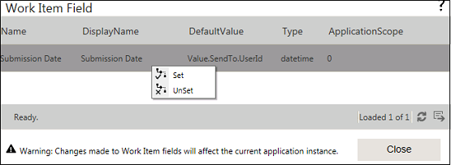

No
Work Item Fields Property Window
You can set the Work Item Fields for this activity in this property window. To access this window, click the button in the 'Work Item Fields' property.

The window has a grid listing all the work item fields that have been set for the process.
Note: While entering a value in the Work Item field, it is recommended to keep it less than the specified database column size. If there is a need to increase the size of the Work Item field, the user should manually increase the column size in the database.